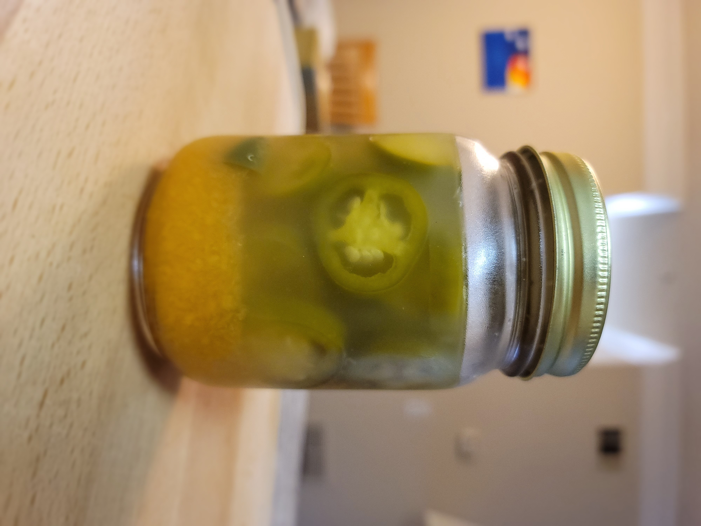

Description
This is a delicious and simple recipe I have created for pickled Jalapenos.
As you will discover, you need only a couple ingredients and tools to have wonderful, home-made pickles!
Ingredients
*Optional
- Jalapenos
- Habaneros
- Vinegar
- *Sugar
- *Salt
Instructions
- Throughly wash the peppers
- Remove stems from all peppers
- Slice Jalapenos into coins and set aside
- Blend Habaneros into a fine paste with a little water
- In a kettle or pot bring 1 part each vinegar and water to a boil (Just enough to cover the peppers in a mason jar, this is also where you can add salt and sugar to taste)
- Divy Habanero puree and Jalapenos evenly into clean mason jars
- Poor enough hot vinegar mixture over peppers to completely cover
- While hot, tightly lid the jars and let cool
- Peppers will be ready once cool and have lost their bright green color and will continue to get better over time
home